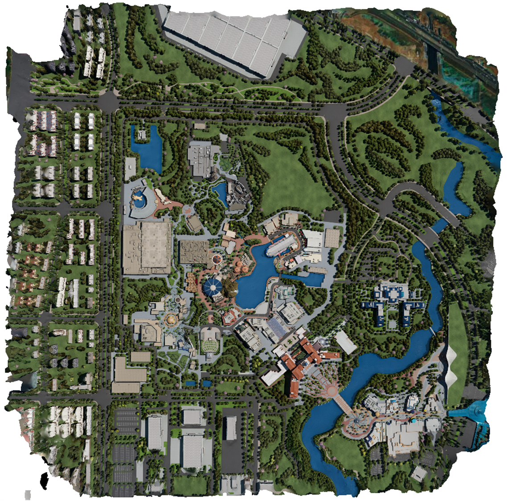

Magic-City Datasets
MC-Universal

MC-Freeway

Using Gaussian Splatting (GS) for neural digital city rendering is promising due to GS's fast rendering speed. However, as shown in (a), the vanilla GS performs poor for city-scale scenes. Our densely anchored Gaussian field (Dagger) improves the rendering quality significantly as (b) shows. The second row zooms in the red box regions of the first row. Two key techniques of Dagger (densely and anchored) are highly related to geometry. To systematically evaluate geometry, we contribute the first high-quality synthetic city with mesh ground truth. The third row shows our geometry (e) is much better than vanilla GS (d). As (d/e) visualization is achieved by setting the opacity of all Gaussians to infinity, floaters turn into white highlights, e.g., rooftop in (d).
Gaussian Splatting (GS), a novel representation free of neural network evaluation, is naturally suitable for digital city reconstruction and visualization because GS is efficient in both training and inference while achieving good rendering quality. But adapting Gaussian fields for large-scale city modelling is very challenging and we identify that a key issue is geometry. Specifically, GS uses structure-from-motion (SfM) point clouds for initialization, but city-scale scenes have large flat grounds and repetitive man-made structures, making reliable SfM point clouds sparse. Meanwhile , due to overfitting caused by limited aerial views, GS is prone to Gaussian center and scale drift. These geometry-centered challenges also negatively impact novel view synthesis performance. To this end, we propose the algorithm Dagger which represents densely anchored Gaussian fields for geometry-informed learning. There are two key techniques in Dagger: dense initialization and Gaussian anchoring. We reveal that these two techniques closely collaborate with each other and only adopting one of them leads to limited success. Specifically, dense initialization without anchoring would drag the Gaussians (roughly) along the gravity direction thus violates the geometry. Sparse initialization with anchoring leads to anchored Gaussians to aggressively deform to fit the training viewpoints and violates the geometry. When combined together , they effectively regularize the geometry of GS and improve the novel view synthesis quality. Besides, since there is no high-quality large-scale digital city benchmarks with mesh ground truth, we contribute the very first one. Our benchmark is a well-developed toolbox that involves baseline methods and evaluation interfaces (especially geometry-related). Our experiments systematically show that Dagger out-performs vanilla GS in terms of both rendering quality and geometry.
@misc{song2024sags,
title={Dagger: Densely Anchored Gaussian Fields for Geometry-informed Neural Digital Cities},
author={Yuantao Chen and Zhuo Yang and Ming Gao and Songen Gu and Nana Wang and Liyi Luo and Hao Zhao},
year={2024},
eprint={},
archivePrefix={arXiv},
primaryClass={cs.CV}
}